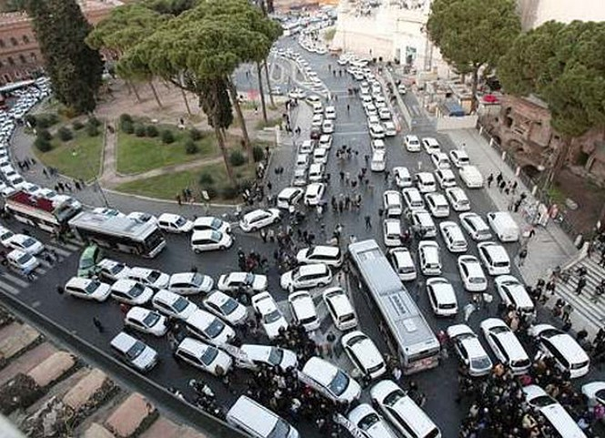
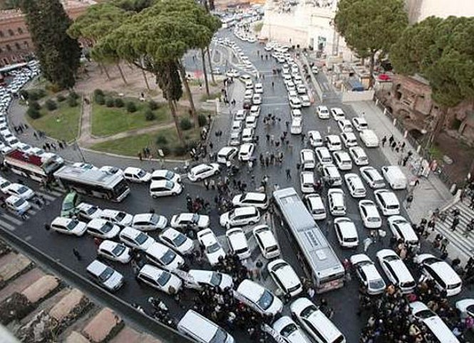
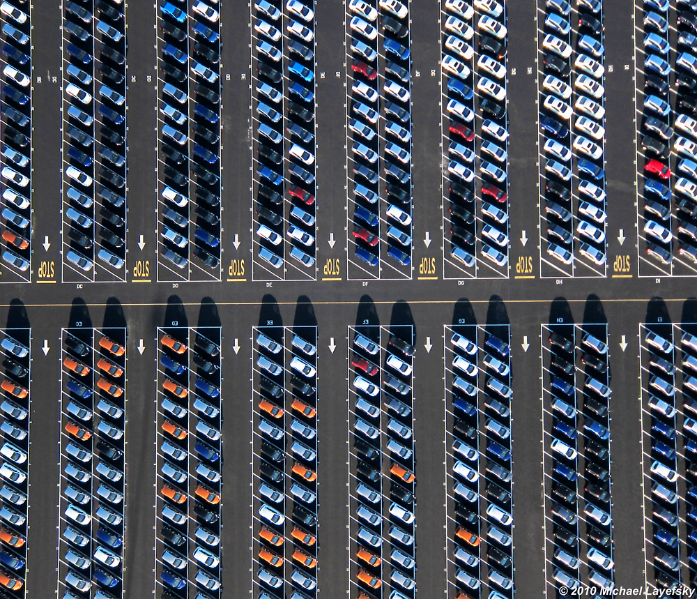

Citizen Science
SETI@home [1999]: analyze radio signals, searching for signs of extraterrestrial intelligence . People can partecipate using their PC, donating their computational resources.

foldit [2008]: fold the structures of selected proteins as perfectly as possible, using tools provided in the game. Nature paper with credits more than 57000 authors.
Quantum Moves [2012]: simulations of logical operations in a quantum computer. Played over 8 million times by more than 200,000 players worldwide.
The 200 000 players were all beaten by the stochastic optimization method. :(
Motivation 3
I was born in Rome
I had a very difficult childhood 

Rome public transport are "not so good".
Ok. But how much compared to the other cities?
Where is the better served [by public transport] place in the city?
And in the world?
CityChrone: the context
Urban Accessibility measures
Huge scientific literature
The first definition of accessiblity in urban context is done more than 50 years ago
Many different definitions of accessibility
But no attemp to compute it at large scale.
A science of city needs quantitative measurement
This work must be considered, first of all, as an empirical work. It defines procedures to measure quantities and then we measured them.
Prerequisites
Data, algorithms and data visualization.
Quantity Definition
Easy to understand, easy to compute and meaningful quantities to measure public transport efficiency.
Collective creativity
Exploring the huge and complex space of new configurations of the public transport in cities
Data, visualizations, algorithms
CityChrone
Science for City
Boundaries and Tessellation.
It is possible to compute isochrones

First step towards an accessibility measure:
The larger isochrones are, the faster you move.

Velocity Score
Average velocity taking a random direction
Paris
Rome


interactive maps and more cities:
Sociality Score
Number of people is possible to reach in a typical day trip starting from a point.
Paris
Rome


interactive maps and more cities:
City Rankings
City Velocity
Velocity Score per person
City Sociality
Sociality Score per person
Cohesion
City Sociality divided by total population
Values distribution
Area distributions - Population distributions
Inequality distribution of
accessibilities
Exponential decay from the center of the city.
Exponential decay of the Velocity Score with the time distance from the center.
Exponential decay from the center of the city.
Exponential decay of the Sociality Score with the time distance from the center.
Why these patterns are observed in all cities?
Are these inequalities unavoidable?
Can be modified or optimized?
In which way?
I don't known.
CityChrone
Interactive platform
Now I know how much Rome public transports suck
What we have to do to reach Paris?
What are the best interventions given a budget?
Let's Play!
CityChrone
Interactive platform for exploring new scenario
Budget: 5 Bilion €
Name Scenario: Gram Author: Pietro

After 1 year
Name Scenario: rer + circle Author: mat

The future of public transports in cities
Bad ending for my current research, but happing ending for public transport in the cities?
Average person per car 1.2

95% of the time the cars are parked

Collaborators: